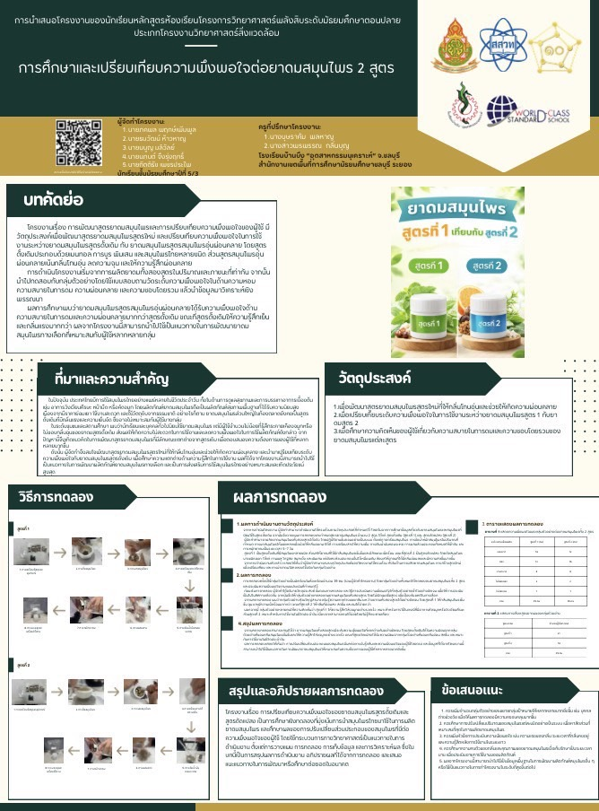
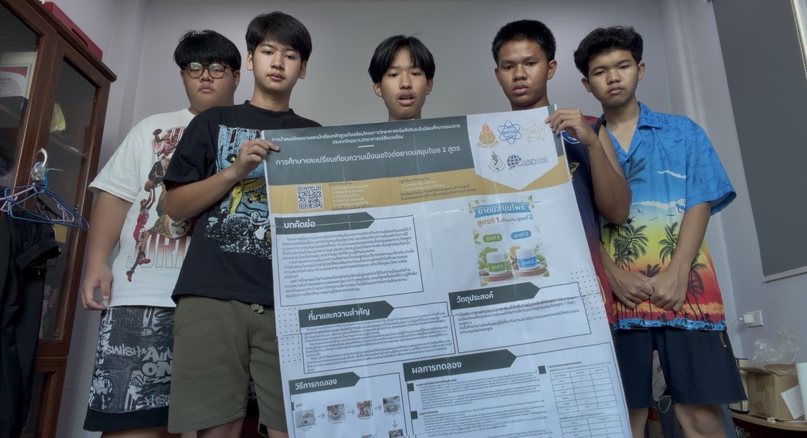

ผลงานและเกียรติบัตร
🏆 ผลงานที่ 1

เป็นวิทยากรจัดแสดงผลงานนิทรรศการวิทยาศาสตร์และเทคโนโลยี
รายละเอียดผลงาน: เข้าร่วมเป็นวิทยากรจัดแสดงผลงานนิทรรศการ วิทยาศาสตร์และเทคโนโลยี เนื่องในงานวันวิทยาศาสตร์แห่งชาติ ได้มีโอกาสนำเสนอข้อมูลและแลกเปลี่ยนความรู้กับผู้เข้าชม
ทักษะที่ได้รับ:
- ทักษะการสื่อสารและการนำเสนอผลงาน
- ทักษะการทำงานร่วมกับผู้อื่น
- ทักษะการถ่ายทอดความรู้ด้านวิทยาศาสตร์
- ทักษะการคิดวิเคราะห์และแก้ไขปัญหา
- ทักษะการวางแผนและการจัดเตรียมงาน
- ทักษะความรับผิดชอบและการตรงต่อเวลา
- ทักษะการใช้เทคโนโลยีในการนำเสนอ
🧪 ผลงานที่ 2 : โครงงานที่ภาคภูมิใจ


การศึกษาและเปรียบเทียบความพึงพอใจต่อยาสมุนไพร 2 สูตร
รายละเอียดโครงงาน: เป็นโครงงานที่ศึกษาและเปรียบเทียบความพึงพอใจ ต่อผลิตภัณฑ์ยาสมุนไพร 2 สูตร โดยได้ฝึกการทดลอง การเก็บข้อมูล และการวิเคราะห์ผลจากการศึกษา
ความภาคภูมิใจ: โครงงานนี้ทำให้ได้ฝึกกระบวนการทำงานอย่างเป็นขั้นตอน ทั้งการทดลอง การสังเกต การเก็บข้อมูล การวิเคราะห์ผล และการทำงานร่วมกับผู้อื่น
ความเกี่ยวข้องกับสาขาที่ต้องการศึกษาต่อ: โครงงานนี้สอดคล้องกับ คณะเทคโนโลยีการเกษตร สาขาวิชาพัฒนาผลิตภัณฑ์อุตสาหกรรมเกษตร เพราะได้ฝึกกระบวนการศึกษาและพัฒนาผลิตภัณฑ์ รวมถึงการวิเคราะห์และเปรียบเทียบคุณสมบัติของผลิตภัณฑ์ ซึ่งสามารถนำไปต่อยอดกับการพัฒนาผลิตภัณฑ์ทางการเกษตรได้
ทักษะที่ได้รับ:
- ทักษะการทดลองและการปฏิบัติจริง
- ทักษะการสังเกตและเก็บข้อมูล
- ทักษะการคิดวิเคราะห์
- ทักษะการพัฒนาผลิตภัณฑ์
- ทักษะการทำงานเป็นทีม
- ทักษะการนำเสนอผลงาน